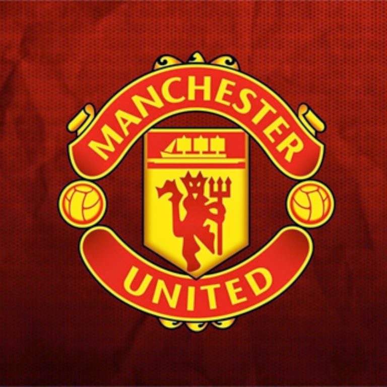
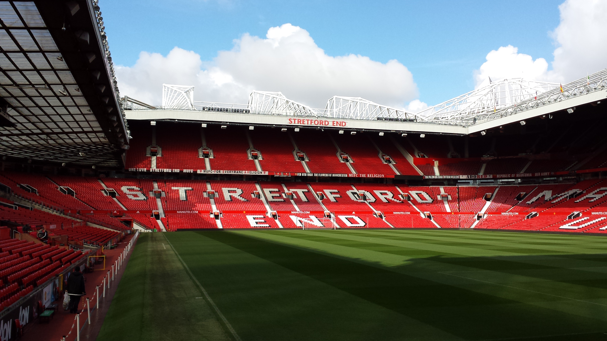

Manchester United Football Club
The Red Devils — one of the most successful clubs in English football
Explore our historyClub at a glance
Founded1878 as Newton Heath LYR F.C.
RenamedManchester United in 1902
NicknameThe Red Devils
Home groundOld Trafford, Manchester
ColoursRed, white and black
League titles20 English top-flight titles
Gallery



Welcome! Use the menu above to learn about the club's history, its famous stadium and its honours.